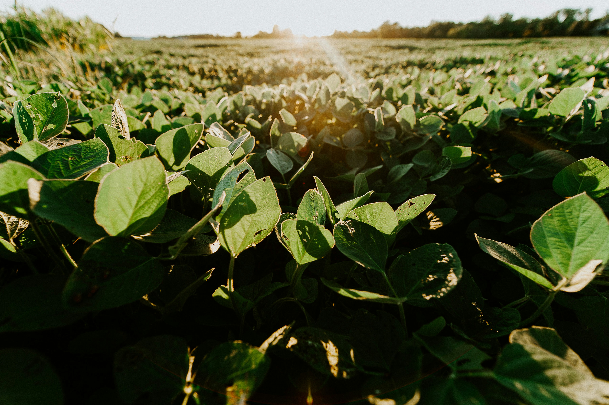

Nossa Produção

Confinamento de Gado
Produção de carne com manejo responsável e bem-estar animal.

Soja
Grãos de alta qualidade produzidos com tecnologia e sustentabilidade.
Do coração do Tocantins, cultivamos soja e criamos gado com respeito à terra e ao futuro.
Conheça a FazendaA Fazenda Santa Rita de Cássia está localizada no interior do Tocantins e une tradição e tecnologia para produzir com qualidade e respeito à natureza.
Produção de carne com manejo responsável e bem-estar animal.
Grãos de alta qualidade produzidos com tecnologia e sustentabilidade.
📱 WhatsApp: (63) 9 9999-9999